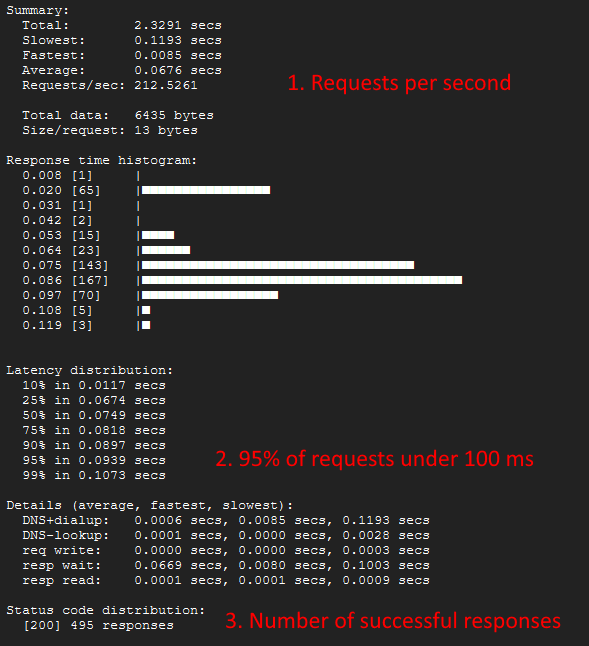

Updates:
- The method for calculating throughput was changed to use multiple longer duration tests.
- When testing Cloud Run and Cloud Functions 2nd gen, these services originally reported very good results but this was probably due to multiple instances being available. I haven’t been able to reproduce multiple instances being created, but did check to make sure that only one instance was available during the updated tests.
Overview
Google Cloud has several serverless offerings for handling web requests: App Engine, Cloud Functions, and Cloud Run. In this article I would like to compare the base request throughput between these offerings and explore the developer experience in working with these services.
App Engine is an easy way to create web applications without having to worry about things like databases, authentication, web servers, etc. This is an older service and probably shouldn’t be used for new projects. It is being included to see how things are evolving.
Cloud Functions runs specific code (a function) whenever a specified event happens. The function can be set to trigger on a web request or an event from a message bus. There are two different versions of Cloud Functions (1st and 2nd gen) and this article will compare both.
Cloud Run is a service that runs containerized code. This could be anything from a website to a machine learning model.
Serverless basically means that you don’t have to worry about hardware provisioning, software updating, etc. and you get flexible scalability. These services can scale to zero to minimize cost when no work needs to be done and can scale up “infinitely” when any amount of work needs to be done.
Methods
The aim is to test each of the services in such a way that the only thing changing is the service being hit. The following items need to be the same (or as close as possible):
- the code in the service
- the service machine size
- the service configuration
- the app making the requests and source computer
Test App
I created a basic “hello world” app in nodejs for each of the different services where the app responds to web requests with “Hello, World!”. This should allow a baseline request throughput to be determined since the apps aren’t handling authentication, hitting external services, or doing any complex computation.
Serverless Parity
The app needs to be running at parity in each of the serverless services to eliminate differences in hardware and configuration from the throughput results. To get the services in parity, the memory, cpu, app concurrency, and app scaling amount need to be the same.
Basics
Since this is a nodejs app and nodejs is single threaded, only one cpu (max) is needed.
Cloud Functions 1st gen can only support one concurrent request at a time, so single concurrency should be chosen to allow for a fair comparison with the other services. Multiple concurrency can be experimented with at a different time.
This experiment is really to determine a baseline for these services, so app scaling should be minimized to only allow for a single instance. App scaling can be experimented on at a different time.
This leaves memory size and max CPU to be figured out for parity.
Cloud Run
Cloud Run configuration reference: https://cloud.google.com/run/docs/configuring/services/cpu
Cloud Run needs a minimum of 1 CPU to allow for more concurrency. This isn’t really helpful for this experiment, but it will be very useful in upcoming experiments. Lets choose 1 CPU which will give a better baseline for future experiments.
Based on the selections for the other services, a memory size of “2 GiB” was chosen.
Cloud Functions
Cloud Functions configuration reference: https://cloud.google.com/functions/docs/configuring
Cloud Functions 1st gen only allows for a configuration of memory which then determines the CPU. Choosing “2048MB” for Cloud Functions 1st gen gives 1 CPU.
A memory size of “2 GiB” and 1 CPU was chosen for Cloud Functions 2nd gen so it matches with the other services.
App Engine
App Engine vs Cloud Run configuration reference: https://cloud.google.com/appengine/migration-center/run/compare-gae-with-run
Choosing an “Instance Class” for App Engine sets the memory and CPU. An instance class of “F4” sets 1 CPU and 1.5GB of memory which should be close enough for this experiment.
Request Throughput
There are a few ways that request throughput could be determined, but I was most interested in the end-user experience. This means that internal service metrics couldn’t be used and that a load generator of some sort should be used.
Hey
Hey: https://github.com/rakyll/hey
I experimented with several programs that slam endpoints with requests, but ultimately ended up sticking with a program called “Hey”. I found that Hey’s output was easiest to see differences in the response latency distribution, and it could send a certain number of requests for quick testing or send requests for a specific amount of time for longer tests.
This program runs from one computer (destination) and hits the target server with requests. This will give us the request throughput that the server can deliver to the destination computer.
Latency Distribution

I played with several methods of trying to find request throughput, but ultimately ended up settling on trying to get 95% of the requests under 100 ms and then using that to find the request throughput. Aiming for 99% of the requests to be under a threshold gave too much variability while 95% was “fairly stable”.
Calculating Throughput
Even with targeting results where 95% of the requests come back in under 100 ms, there was still quite a bit of variability between the throughput in each run. I think the best that can be done is run a sustained load test multiple times to try and find an average with some error percentage.
The service should also be “warm” (one instance should already be active and ready to accept requests) so service startup times aren’t included in the request throughput calculations. Service startup times could be explored in another experiment.
Load Generating (Destination) Computer
To limit network effects from impacting the results, I chose to use a GCP Cloud Shell to generate the load. This puts the load generating computer within Google’s network and close to the services.
Cloud Shell Instance: https://shell.cloud.google.com/?show=terminal
Install Hey: sudo apt install hey
To check the Cloud Shell region/zone: curl -H "Metadata-Flavor: Google" metadata/computeMetadata/v1/instance/zone
Experiment
The source code is available here: project setup and services creation code
Steps:
Each of the serverless services is loaded with, basically, the same “hello world” app. The services need slightly different boilerplate code, but ultimately the code we are testing is the same.
Each of the serverless services is set to 1 CPU, 1 concurrency, 1 max instance, and around 2 GB of memory.
“Hey” is used to quickly find the amount of concurrent requests that will lead to 95% of requests returning in under 100 ms. This is repeated until a semi stable result is found per service.
hey -n 500 -c [concurrency] [service url]
“Hey” is run for a longer duration (5 minutes) to find the throughput per service. This is repeated five times per service to find the average and error percentage.
hey -z 5m -c [found concurrency] [service url]
Experiment Results
App Engine

| Run | Requests/sec |
|---|---|
| 1 | 388 |
| 2 | 454 |
| 3 | 421 |
| 4 | 408 |
| 5 | 311 |
App Engine was able to achieve an average of 396 requests per second (+- 21%) with a Hey concurrency of 20 requests at a time.
Cloud Functions 1st Gen

| Run | Requests/sec |
|---|---|
| 1 | 286 |
| 2 | 301 |
| 3 | 301 |
| 4 | 298 |
| 5 | 305 |
Cloud Functions 1st gen was able to achieve an average of 298 requests per second (+- 4%) with a Hey concurrency of 15 requests at a time.
Cloud Functions 2nd Gen

| Run | Requests/sec |
|---|---|
| 1 | 190 |
| 2 | 219 |
| 3 | 219 |
| 4 | 221 |
| 5 | 216 |
Cloud Functions 2nd gen was able to achieve an average of 213 requests per second (+- 10%) with a Hey concurrency of 15 requests at a time.
Cloud Run

| Run | Requests/sec |
|---|---|
| 1 | 262 |
| 2 | 190 |
| 3 | 216 |
| 4 | 213 |
| 5 | 216 |
Cloud Run was able to achieve an average of 219 requests per second (+- 20%) with a Hey concurrency of 15 requests at a time.
Compiled Results
These are the throughput results for each service at 1 CPU, 1 concurrency, 1 instance, and around 2 GB of memory:
| Service | Average Requests/sec | +- % Deviation | ~ Possible Range |
|---|---|---|---|
| App Engine | 396 | 21% | 313 - 479 req/s |
| Cloud Functions 1st Gen | 298 | 4% | 286 - 310 req/s |
| Cloud Run | 219 | 20% | 175 - 263 req/s |
| Cloud Functions 2nd Gen | 213 | 10% | 192 - 234 req/s |
Developer Experience
App Engine
App Engine gave the worst developer experience of the four services:
- To enable App Engine, you must have “project owner” permissions.
- The service can only be enabled once per project and in only one region. To enable the service in more than one region requires a project to be created per region.
- The first app that is created in App Engine has to be called “default”. And this app can’t be deleted after creation, so Terraform can’t clean this up.
- App Engine can’t be turned off or deleted after it is turned on in a project. The project has to be deleted to clean up App Engine.
- In Terraform, you must include the runtime and entrypoint even though they are already defined in the app’s app.yaml file.
- In Terraform, you have to manually version the app and this is difficult to automate.
- In Terraform, there isn’t a way to get the app url. The app url has to be manually calculated with the App Engine’s location code being hardcoded.
Some other notes about App Engine that are more neutral:
- The apps are public to the internet by default. The other services (Cloud Functions and Cloud Run) had to have a role binding applied to allow anonymous access.
- Google has a comment in the App Engine vs Cloud Run comparison document that says they took what they learned from App Engine and put it into Cloud Run. And, that they made Cloud Run integrate with more services than with App Engine.
Cloud Functions
The Cloud Functions developer experience was pretty much exactly as expected (which is good). The following notes are things that stood out.
Cloud Functions 1st Gen:
- There isn’t a way to control the CPU count directly. The CPU count is controlled by the amount of memory.
- Each function can only handle 1 concurrent request at a time.
Cloud Functions 2nd Gen:
- The 2nd generation of Cloud Functions fixed the problems with the 1st gen.
- The 2nd gen is actually using Cloud Run behind the scenes.
Cloud Functions (both generations) do have a potential negative, but I didn’t run into it during this experiment:
- Each function can only have one trigger. Multiple functions would have to be created to handle different triggering events even if the code to run was the same for each event.
Cloud Run
Cloud Run had the best developer experience. Since this service just runs a container, there is no special code or language required.
The only notes I would add deal with how the container is created and loaded into the Cloud Run service:
- There is no way to submit code to Cloud Run directly from Terraform and no way to trigger Cloud Build to then submit the code to the service from Terraform. This typically wouldn’t be a problem in a normal development scenario because an external pipeline would be setup to maintain the service with the correct code. But, I didn’t want that overhead for these test experiments, so I had to create a script step to run the build and then deploy the container to Cloud Run after Terraform was applied.
- Cloud Run can’t be created without an initial container image, and because of the specifics of this test environment, the initial container was set to a default Google container which was replaced later in a script step after Terraform was applied.
- Cloud Build can’t be told where the Dockerfile is, so the app Dockerfile had to live in the root app folder instead of in a devops folder or somewhere more appropriate. There is a way to specify Dockerfile locations with a cloudbuild.yaml file, but this requires including special code (the cloudbuild.yaml file) which wasn’t appealing.
Final Thoughts
I was shocked to find how inconsistent the throughput results were when considering just a single service. It was painful to find anything close to consistency and to get results that could be compared between services.
It was also interesting to see how each service compared when they were all dealing with the same limitation of single concurrency. I’m excited to see how each service handles concurrency and scaling.
Comments
Leave a comment: